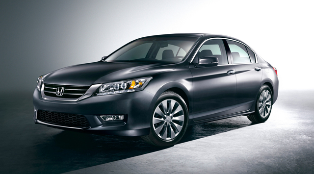
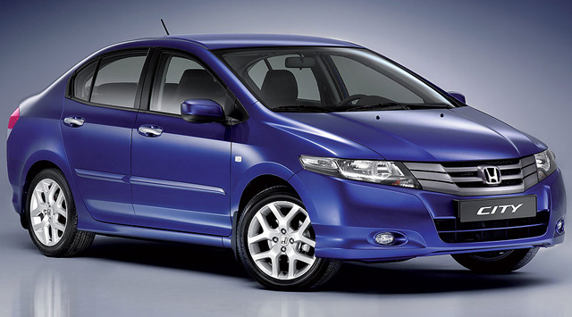
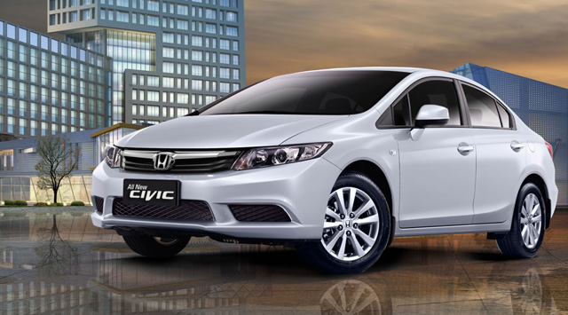
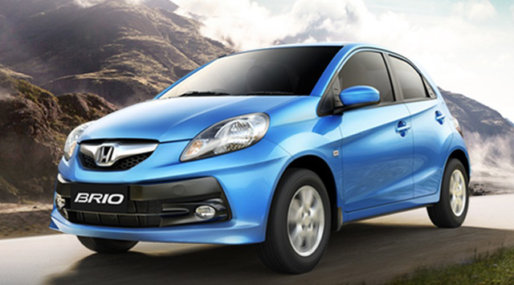
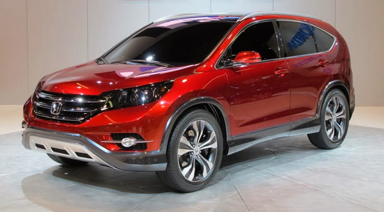
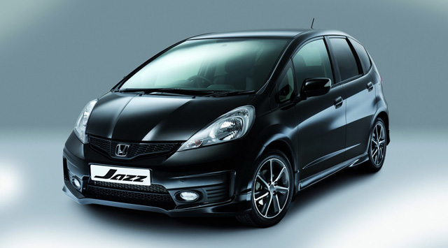
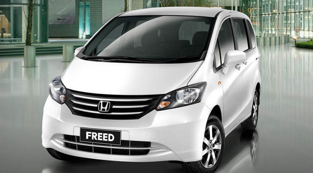

Pengenalan Mobil Honda
Anggota Kelompok
- Fandy 12.111.1141
- Thomas 12.111.1869
- Johny 12.111.2422
Dosen Pembimbing Hardy
Tentang Honda
Honda adalah produsen mobil, truk, sepeda motor dan skuter asal Jepang. Mereka juga membuat kendaraan segala medan (ATV), generator listrik, mesin kelautan, dan peralatan taman. Honda didirikan pada 24 September 1948 oleh Soichiro Honda. Honda merupakan produsen sepeda motor terbesar di dunia sejak 1959, dan juga produsen mesin pembakaran dalam terbesar dengan produksi lebih dari 14 juta unit tiap tahun. Honda berhasil menggusur Nissan sebagai produsen mobil kedua terbesar di Jepang tahun 2001. Honda juga menggusur Chrysler, untuk menjadi pabrikan mobil terbesar keempat di pasar AS. Sekarang ini, Honda juga pabrikan mobil terbesar keenam di dunia.
Honda Accord
Spesifikasi Honda Accord
Mesin
- Tipe : 4 Silinder Segaris, I-VTEC DOHC, 16 Katup
- Sistem Suplai Bahan Bakar : PGM-FI
- Isi Silinder : 2.356 cc
Dimensi / Ukuran
- Panjang (mm) : 4.870
- Lebar (mm) : 1.850
- Tinggi (mm) : 1.465
Sistem Kemudi
- Tipe : Rack & Pinion
Sistem Rem
- Depan : Ventilated Disc
- Belakang : Disc
Ban
- Depan : 225/50 R 17
- Belakang : 225/50 R 17
Kelebihan Honda Accord
Fitur kelengkapan yang memanjakan penumpang belakang seperti remote audio juga dimiliki mobil ini. Termasuk tombol pengatur posisi kursi penumpang depan di sandaran jok.
suspensi Accord sudah terasa cukup lembut. Ini disebabkan Honda mencoba tetap mempertahankan faktor fun to drive mobil ini sehingga mobil masih enak untuk bermanuver.
Honda City
Spesifikasi Honda City
Mesin
- Tipe : 1.5LSOHC 4 silinder segaris, 16 katup i-VTEC + DBW
- Sistem Suplai Bahan Bakar : PGM-FI
- Isi Silinder : 1.437 cc
Dimensi / Ukuran
- Panjang (mm) : 4.442
- Lebar (mm) : 1.854
- Tinggi (mm) : 1.477
Sistem Kemudi
- Tipe : Electric Power Steering
Sistem Rem
- Depan : Ventilated Disc
- Belakang : Disc
Ban
- Depan : 175/65 R 15
- Belakang : 175/65 R 15
Kelebihan Honda City
Kini Honda All New City sudah dibekali dengan mesin yang sama dengan Honda Jazz, yaitu dengan mesin 1.5 liter yang sudah berteknologi i-Vtec. Selain hemat bahan bakar, urusan tenaga juga tidak mengecewakan.
Akselerasi yang ditawarkan tergolong lebih lembut dan hampir tidak terasa setiap perpindahan giginya. Limpahan tenaganya sudah didapatkan pada putaran bawah, maka tak heran jika pada jalur tanjakan Anda tidak akan kewalahan untuk mengemudi mobil Honda City ini.
Honda Civic
Spesifikasi Honda Civic
Mesin
- Tipe : SOHC 4 Silinder Segaris 16 Katup i-VTEC
- Sistem Suplai Bahan Bakar : PGM-FI
- Isi Silinder : 1.798 cc
Dimensi / Ukuran
- Panjang (mm) : 4.540
- Lebar (mm) : 1.755
- Tinggi (mm) : 1.435
Sistem Kemudi
- Tipe : Rack & Pinion with Electric Power Steering
Sistem Rem
- Depan : Ventilated Disc
- Belakang : Disc
Ban
- Depan : 205/55 R 16
- Belakang : 205/55 R 16
Kelebihan Honda Civic
All New Honda Civic 2.0 memakai mesin I-Vitec SOHC+BDW+DICT berkapasitas silinder 2000 cc, memakai 4 silinder segaris 16 valve. mesin civic ini mampu mengeluarkan daya maksimum (tenaga maksimum) sebesar 155 Ps pada putaran mesin 6500 Rpm dan torsi yang dihasilkan mobil ini 190 Nm pada 4300 Rpm, sedangkan All New Civic 1.8 L memiliki tenaga yang lebih kecil yakni 141 Ps di 6500 Rpm.
Safety mobil ini bisa dibilang lumayan karena telah dibenamkan dual airbags pada pengemudi dan penumpang bagian depan. Desain rangka body mobil ini menggunakan teknologi G-Con + Ace yakni desain rangka yang dibuat untuk meredam benturan pada salah satu titik untuk dibuang ke bagian mobil yang lain
Honda Brio
Spesifikasi Honda Brio
Mesin
- Tipe : 1.2L SOHC 4 Silinder Segaris 16 Katup i-VTEC + DBW
- Sistem Suplai Bahan Bakar : PGM-FI
- Isi Silinder : 1.198 cc
Dimensi / Ukuran
- Panjang (mm) : 3.610
- Lebar (mm) : 1.650
- Tinggi (mm) : 1.485
Sistem Kemudi
- Tipe : Rack & Pinion + Electric Power Steering
Sistem Rem
- Depan : Ventilated Disc
- Belakang : Drum
Ban
- Depan : 175/65 R 14
- Belakang : 175/65 R 14
Kelebihan Honda BRIO
pada sisi kemudi yang relatif ringan dalam bermanuver, memiliki akselerasi yang bagus dengan handling yang stabil (tidak gampang loss drive), memiliki tenaga yang paling besar pada kelas hatchback 1300 cc. Mobil ini mudah dikendalikan karena memiliki desain eksterior yang kompak, tampil sporty dan kompak kare dilengkapi dengan Chrome front grille, pada bagian depan juga dilengkapi dengan lampu LED Hingh mount stop dan Rear reflektor. pada bagian samping terdiri dari pintu menggunakan door handle.
Honda CR-V
Spesifikasi Honda CR-V
Mesin
- Tipe : i-VTEC 2.0L SOHC
- Sistem Suplai Bahan Bakar : PGM-FI
- Isi Silinder : 1.997 cc
Dimensi / Ukuran
- Panjang (mm) : 4.566
- Lebar (mm) : 1.820
- Tinggi (mm) : 1.680
Sistem Kemudi
- Tipe : Rack & Pinion + Electric Power Steering
Sistem Rem
- Depan : Ventilated Disc
- Belakang : Drum
Ban
- Depan : 225/65 R 17
- Belakang : 225/65 R 17
Kelebihan Honda CR-V
Memiliki fitur ECON Mode, sebuah teknologi pintar untuk mengubah sistem pengendaraan yang memaksimalkan efisiensi bahan bakar hingga 20 persen --tergantung dari kondisi jalan maupun cara berkendara.
Honda Jazz
Spesifikasi Honda Jazz
Mesin
- Tipe : 1.5L 550HC, 4 Silinder segaris, 16 Katup i-VTEC + DBW + Torque Boost Resonator
- Sistem Suplai Bahan Bakar : PGM-FI
- Isi Silinder : 1.497 cc
Dimensi / Ukuran
- Panjang (mm) : 3.900
- Lebar (mm) : 1.650
- Tinggi (mm) : 1.525
Sistem Kemudi
- Tipe : Rack & Pinion + Electric Power Steering
Sistem Rem
- Depan : Ventilated Disc
- Belakang : Disc
Ban
- Depan : 175/65 R 15
- Belakang : 175/65 R 15
Kelebihan HONDA JAZZ
Kelebihan Honda jazz 2013 adalah terdapat sentuhan pada headlamp pada bagian eksterior dan interior yang membuatnya semakin canggih dan modern. Telah dipasang emblem rp dan smoke head lamp pada grill dengan velg berukuran 16 inchi yang baru pada bagian bawah.Model stir yang mengadopsi formula 1 yang membuat anda semakin terlihat berani membawa mobil sporty ini. Bahan bakar tentunya lebih irit dari versi yang terdahulu. Mobil ini juga bisa dibilang mobil yang memiliki desain sporty dibanding dengan mobil lain sejenisnya.
Honda Freed
Spesifikasi Honda Freed
Mesin
- Tipe : 1.5L 550HC, 4 Silinder segaris, 16 Katup i-VTEC + DBW + Torque Boost Resonator
- Sistem Suplai Bahan Bakar : PGM-FI
- Isi Silinder : 1.497 cc
Dimensi / Ukuran
- Panjang (mm) : 4.215
- Lebar (mm) : 1.700
- Tinggi (mm) : 1.740
Sistem Kemudi
- Tipe : Rack & Pinion
Sistem Rem
- Depan : Ventilated Disc
- Belakang : Drum
Ban
- Depan : 185/65 R 15
- Belakang : 185/65 R 15
Kelebihan Honda Freed
Kelebihannya yang pertama terletak pada performa mesinnya yang memiliki tenaga powerfull pada putaran atas, selain itu, manuver serta handling yang lincah pada mobil tersebut dapat dikatakan nyaman untuk sekelas familly car. Desain dashbor yang sudah terlihat modern serta headroom yang luas merupakan kelebihan lain dari mobil tersebut, Honda Freed tersebut juga memiliki kabin yang luas, sehingga akan membuat penumpangnya merasakan kenyamanan ketika berada di dalam mobil tersebut. Kelebihan lainnya yaitu sudah terdapat fitur AC Digital, power sliding doors, serta memiliki fitur safety yang terhitung lengkap di kelasnya.
Honda Mobilio
Hot Sales

Kelebihan HONDA MOBILIO
Kelebihan Honda Mobilio, memiliki desain eksterior yang lebih kuat dan tangguh dan dapat memuat 7 orang penumpang. Mesin bertenaga cukup besar dalam kategori mobil MPV, yakni mesin I-Vitec SOHC 1500cc yang mampu menghasilkan tenaga 118 PS. Terdapat fitur kenyamanan dan entertaiment yakni sistem Audio, AC Double Blower, dan Dual Airbags. Honda Mobilio juga memiliki akselerasi yang cukup kuat dengan tertanamnya penggerak roda depan dan harganya tergolong mobil murah
Spesifikasi Honda Mobilio
Mesin
- Tipe : 1.5L SDHC 4 silinder segaris, 16 katup i-VTEC + DBW
- Sistem Suplai Bahan Bakar : PGM-FI
- Isi Silinder : 1.498 cc
Dimensi / Ukuran
- Panjang (mm) : 4.386
- Lebar (mm) : 1.683
- Tinggi (mm) : 1.603
Sistem Kemudi
- Tipe : Rack & Pinion + Electric Power Steering
Sistem Rem
- Depan : Ventilated Disc
- Belakang : Drum
Ban
- Depan : 185/65 R 15
- Belakang : 185/65 R 15
Harga Mobil Bulan Juni 2014
| Tipe Mobil | Harga Mobil(Rp) |
| Accord VTi 2.4 A/T | 520.000.000 |
| Accord VTi-L 2.4 A/T | 570.000.000 |
| Brio E A/T | 146.000.000 |
| Brio S A/T | 141.000.000 |
| City S A/T | 284.000.000 |
| City S M/T | 269.000.000 |
| New CR-V 2.0 L A/T | 361.500.000 |
| New CR-V 2.0 L M/T | 350.500.000 |
| New CR-V 2.4 L A/T | 390.500.000 |
| All new Civic 1.8 L A/T | 355.000.000 |
| All new Civic 1.8 L M/T | 342.000.000 |
| New Freed A 1.5 A/T | 211.000.000 |
| New Freed E 1.5 A/T | 262.000.000 |
Kelebihan Mobil Honda
6 Fitur Honda
- 1. Sebuah mesin bensin yang mampu memaksimalkan kinerjanya dan disamping itu dapat mencapai tingkat efisiensi bahan bakar yang tinggi. Dengan mengangkat teknologi mesin orisinal Honda yanitu VTEC, dimana mein bensin yang ditawarkan oleh Honda; 660 cc, 1.3 L, 1.5 L, 1.8 L, 2.0 L, 2.4 l, & 3.5 L.mampu memberikan tingkat bahan bakar yang lebih baik sebsar 10-15 % dibandingkan model sebelumnya.Sebuah mesin bensin yang mampu memaksimalkan kinerjanya dan disamping itu dapat mencapai tingkat efisiensi bahan bakar yang tinggi. Dengan mengangkat teknologi mesin orisinal Honda yanitu VTEC, dimana mein bensin yang ditawarkan oleh Honda; 660 cc, 1.3 L, 1.5 L, 1.8 L, 2.0 L, 2.4 l, & 3.5 L.mampu memberikan tingkat bahan bakar yang lebih baik sebsar 10-15 % dibandingkan model sebelumnya.
- 2. Sebuah mesin diesel yang berbentuk lebih kompak dan mempunyai bobot paling ringan di dunia, dan disertai akselerasi kinerjanya serta efisiensi bahan bakar yang lebih baik. Honda memperkenalkan varian mesin baru untuk mesin diesel nya yaitu 1.6 L disamping mesin diesel 2.2 L nya yang telah ada sebelumnya. Tingkat bahan bakarnya mampu mengurangi kadar Co2 sebesar 15%.